Don't Forget Dessert!
Breakfast & Brunch
Pax & Beneficia, Waterside/Clearfork
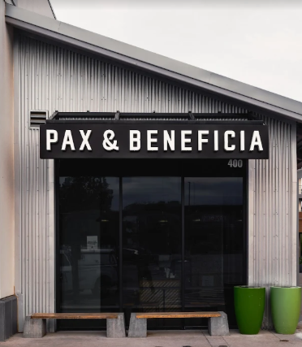
With a few locations around Fort Worth, Pax & Beneficia have staked their claim as one of the best
coffee shops in town. Their almond croissant is to die for, but if you're looking for something more,
their breakfast sandwiches are off the charts.
Pax and Beneficia
Seven Mile, Keller
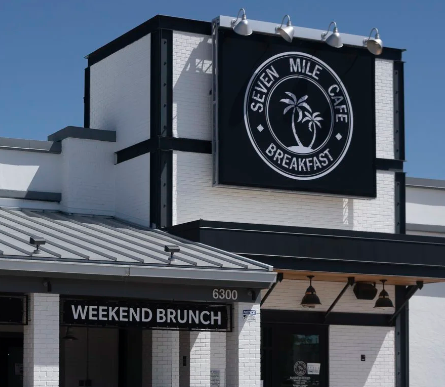
Seven Mile has been a favorite of mine for as long as I can remember. I moved to the North Ft Worth/Keller
area when I forst moved to Texas, so it's always going to have a special place in my heart. They are a
breakfast/brunch/lunch spot only, so they know what they're doing. Make sure to get a NOLA iced coffee,
the Berry Dream french toast, Jo's breakfast tacos, and whatever you do, get hashbrowns!
Seven Mile Cafe
Brewed, Magnolia
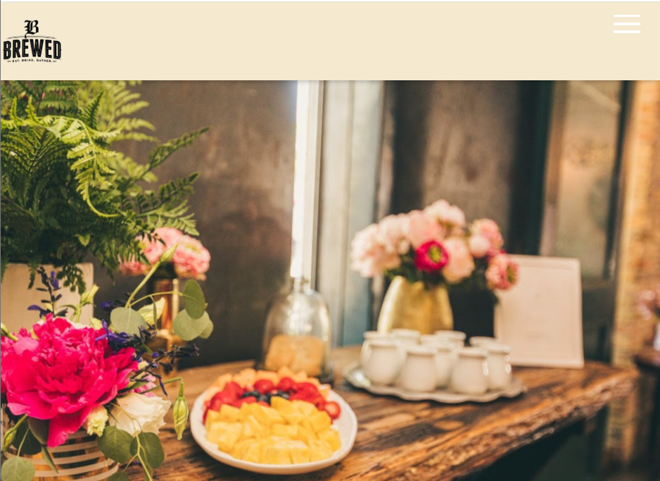
This award winning brunch spot is a must try when youre in the Magnolia area. They serve brunch all day, so
theres no excuse to miss out on this top of the line menu. Breakfast tacos are always a tried and true, but
here, the NOLA french toast (do you see a theme here), or the Low Country Shrimp and grits will have you wishing
brunch was something you could enjoy every day of the week.
Brewed
Press Cafe, Clearfork
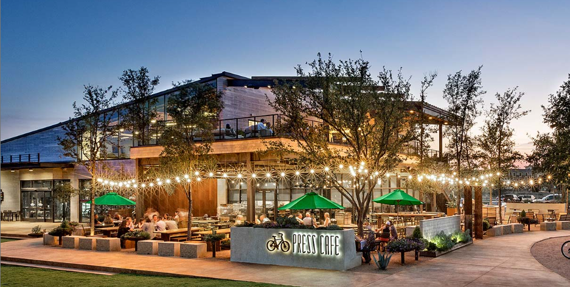
The girls and I have had brunch here so many times, I've tried the whole menu. Get the breakfast sandwich, or the
egg in a hole and do not skip on the mimosas. Trust me.
Press Cafe
Woodshed Smokehouse, University
It's all of the best parts of breakfast and the best parts of Texas BBQ combined. Yes, you read that correctly.
Chef Tim Love does it again with another Fort Worth staple, and this place doubles as a dinner spot as well.
Get the Woodshed Poutine, and the Grand Marnier crepes. Literally, you're welcome.
Woodshed Smokehouse
Lunch
Thai Rice 'n' Noodle, Keller
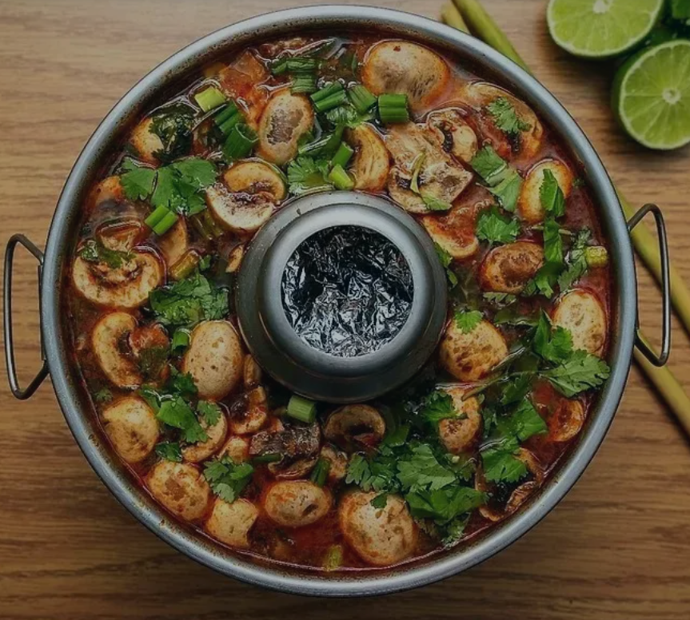
There are plenty of Thai places to try in Fort Worth and honestly, they're all amazing. But Thai Rice 'n' Noodle has
the top spot for me. It's incredibly delicious, consistent, and spicy. Get you some Pad Thai and Thai Green Curry, and then
prepare for an afternoon nap.
Thai Rice 'n' Noodle
Tacos Oasis, South Side
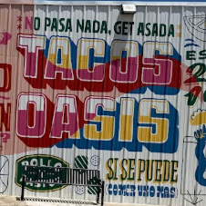
I'm probably going to get in trouble for this one. Tacos Oasis is tucked away from, well, literally everything. It's a locals
only spot known for its combination of pickleball, churros, and authentic Mexican cuisine. You cannot go wrong here, so chow down
and save room for dessert.
Tacos Oasis
Pie Tap, Magnolia
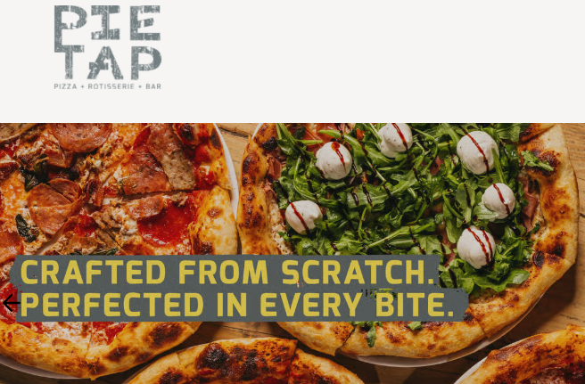
Pie Tap has a few locations in Ft Worth and Dallas, and has landed a place in the list regardless. I am from the Northeast, so I know pizza.
Pie tap? They know pizza. All of their dough is homemade sourdough,.. all of it. From the goat cheese fondue dipping bread to their pizza crusts.
If you want to go for brunch, get the prosciutto eggs benedict or the chicken and waffles. Lunch? Pizza. Whatever and however you like it.
But make sure to get the arancini as well, just like Nonna used to make.
Pie Tap
Dinner
Joe T Garcia's, Stockyards
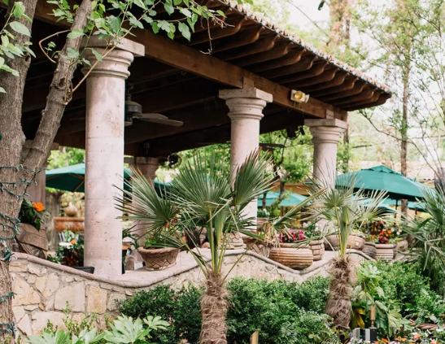
We can't really call Joe T's a hidden gem. It's an old soul. A Classic. Honestly, THE Classic. You can't come to Fort Worth and not go to
Joe T's. It's like coming to Fort Worth and not going to the Stockyards. And since Joe T's is practically in the Stockyards, you have no excuse.
Another place where you cannot go wrong, but you absolutely have to get a margarita, or 3. I don't make the rules.
Joe t Garcia's
Hudson House, University
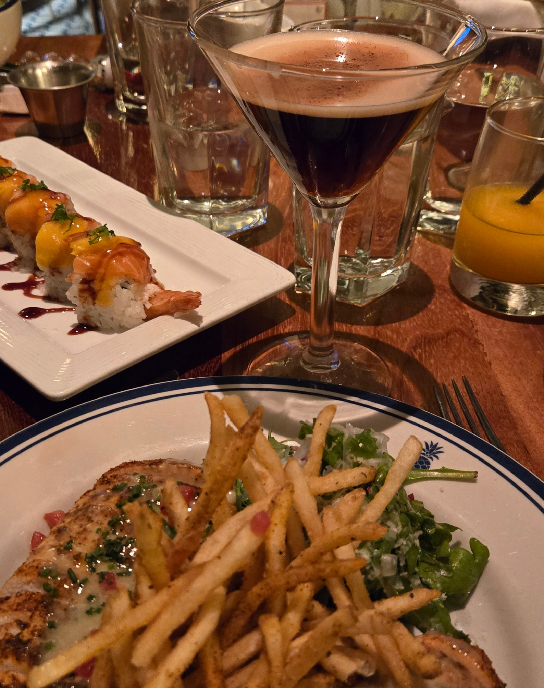
Hudson House is fancy. Like Gucci Shoes and Birkin Bags fancy. But don't let the richest in Fort Worth deter you from
enjoying this gem. Its not overly expensive despite the demogaphic, their happy hour deals are top-tier, and the service is unmatched. The girls and I
have our annual Christmas gift swap here, and last time I have a few too many Espresso Martinis; worth it. Get the French Chicken with your Espresso
Martini and it's a girl dinner for the record books.
Hudson House
Quince, University
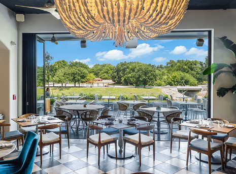
I have only been to Quince once. Yes, once. But the atmosphere, service, and drinks deserve a place in the spotlight. Get a Matcha Martini and some risotto
while overlooking the river.
Quince Riverside
Wishbone and Flynt, Main St
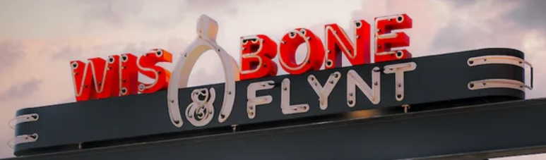
Wishbone & Flynt is chill. Comfort food "reimagined" and a cool, dark, relaxing atmosphere to unwind after a long day of exploring the city. This is a place
to share some apps, some stories, and some really really good food. Truffle fries, Red Fish Eggrolls, Short Ribs, Burgers, Salmon Risotto, and Pasta. What more
could you ask for?
Wishbone & Flynt
Dessert
Emporium Pies, Main St
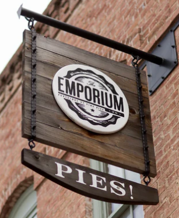
After you have your fill at Wishbone & Flynt, walkdown to Emporium and get a slice of pie and the walk-up window. Their menu is always changing, but you can check
it out on their website before you go. They also have Pie Shakes... If you get one, don't say I didn't warn you. It's a lot, in the best, most
indulgent way possible.
Emporium Pies
Melt Ice Cream, Magnolia

Melt has always been a top favorite for me. Their menu has always flavors and sometimes flavors. Always are the classics, vanilla, chocolate, cookie dough, etc.
The sometimes flavors can be weekly or monthly, and at the time of writing this are flavors like Miso Caramel Brownie, and Hazlenut Espresso Cannoli. Please.
The best part? They have vegan options that AREN'T SHERBERT. I know. I KNOW. They also have cookie/ice cream sandwhiches that literally beat the crap out of the Texas Heat.
Get a homemade wafflecone to finish it all off.
Melt Ice Cream